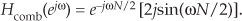
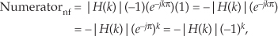
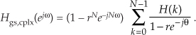
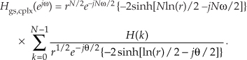
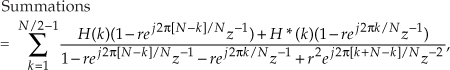
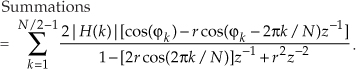
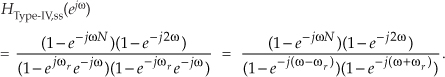

G Frequency Sampling Filter Derivations
While much of the algebra related to frequency sampling filters is justifiably omitted in the literature, several derivations are included here for two reasons: first, to validate the equations used in Section 7.5; and second, to show the various algebraic acrobatics that may be useful in your future digital signal processing analysis efforts.
G.1 Frequency Response of a Comb Filter
The frequency response of a comb filter is Hcomb(z) evaluated on the unit circle. We start by substituting ejω for z in Hcomb(z) from Eq. (7-37), because z = ejω defines the unit circle, giving
Factoring out the half-angled exponential e–jωN/2, we have

Using Euler’s identity, 2jsin(α) = ejα – e–jα, we arrive at

Replacing j with ejπ/2, we have
Determining the maximum magnitude response of a filter is useful in DSP. Ignoring the phase shift term (complex exponential) in Eq. (G-4), the frequency-domain magnitude response of a comb filter is
with the maximum magnitude being 2.
G.2 Single Complex FSF Frequency Response
The frequency response of a single-section complex FSF is Hss(z) evaluated on the unit circle. We start by substituting ejω for z in Hss(z), because z = ejω defines the unit circle. Given an Hss(z) of
we replace the z terms with ejω, giving
Factoring out the half-angled exponentials e–jωN/2 and e–j(ω/2 − πk/N), we have
Using Euler’s identity, 2jsin(α) = ejα – e–jα, we arrive at
Canceling common factors and rearranging terms in preparation for our final form, we have the desired frequency response of a single-section complex FSF:

Next we derive the maximum amplitude response of a single-section FSF when its pole is on the unit circle and H(k) = 1. Ignoring those phase shift factors (complex exponentials) in Eq. (G-10), the amplitude response of a single-section FSF is
We want to know the value of Eq. (G-11) when ω = 2πk/N, because that’s the value of ω at the pole locations, but |Hss(ejω)|ω=2πk/N is indeterminate as
Applying the Marquis de L’Hopital’s Rule to Eq. (G-11) yields
The phase factors in Eq. (G-10), when ω = 2πk/N, are
Combining the result of Eqs. (G-13) and (G-14) with Eq. (G-10), we have
So the maximum magnitude response of a single-section complex FSF at resonance is |H(k)|N, independent of k.
G.3 Multisection Complex FSF Phase
This appendix shows how the (−1)k factors arise in Eq. (7-48) for an even-N multisection linear-phase complex FSF. Substituting the positive-frequency, 0 ≤ k ≤ (N/2)–1, |H(k)|ejϕ(k) gain factors, with ϕ(k) phase values from Eq. (7-46), into Eq. (7-45) gives
where the subscript “pf” means positive frequency. Focusing only on the numerator inside the summation in Eq. (G-16), it is
showing how the (−1)k factors occur within the first summation of Eq. (7-48). Next we substitute the negative-frequency |H(k)|ejϕ(k) gain factors, (N/2)+1 ≤ k ≤ N–1, with ϕ(k) phase values from Eq. (7-46″), into Eq. (7-45), giving
where the subscript “nf” means negative frequency. Again, looking only at the numerator inside the summation in Eq. (G-18), it is
That ejπN factor in Eq. (G-19) is equal to 1 when N is even, so we write

establishing both the negative sign before, and the (−1)k factor within, the second summation of Eq. (7-48). To account for the single-section for the k = N/2 term (this is the Nyquist, or fs/2, frequency, where ω = π), we plug the |H(N/2)|ej0 gain factor, and k = N/2, into Eq. (7-43), giving
G.4 Multisection Complex FSF Frequency Response
The frequency response of a guaranteed-stable complex N-section FSF, when r < 1, is Hgs,cplx(z) with the z variable in Eq. (7-53) replaced by ejω, giving

To temporarily simplify our expressions, we let θ = ω − 2πk/N, giving

Factoring out the half-angled exponentials, and accounting for the r factors, we have
Converting all the terms inside parentheses to exponentials (we’ll see why in a moment), we have
The algebra gets a little messy here because our exponents have both real and imaginary parts. However, hyperbolic functions to the rescue. Recalling when α is a complex number, sinh(α) = (eα – e–α)/2, we have

Replacing angle θ with ω − 2πk/N, canceling the –2 factors, we have
Rearranging and combining terms, we conclude with
(Whew! Now we see why this frequency response expression is not usually found in the literature.)
G.5 Real FSF Transfer Function
The transfer function equation for the real-valued multisection FSF looks a bit strange at first glance, so rather than leaving its derivation as an exercise for the reader, we show the algebraic acrobatics necessary in its development. To preview our approach, we’ll start with the transfer function of a multisection complex FSF and define the H(k) gain factors such that all filter poles are in conjugate pairs. This will lead us to real-FSF structures with real-valued coefficients. With that said, we begin with Eq. (7-53)’s transfer function of a guaranteed-stable N-section complex FSF of
Assuming N is even, and breaking Eq. (G-29)’s summation into parts, we can write
The first two ratios inside the brackets account for the k = 0 and k = N/2 frequency samples. The first summation is associated with the positive-frequency range, which is the upper half of the z-plane’s unit circle. The second summation is associated with the negative-frequency range, the lower half of the unit circle.
To reduce the clutter of our derivation, let’s identify the two summations as
We then combine the summations by changing the indexing of the second summation as
Putting those ratios over a common denominator and multiplying the denominator factors, and then forcing the H(N–k) gain factors to be complex conjugates of the H(k) gain factors, we write

where the “*” symbol means conjugation. Defining H(N-k) = H*(k) mandates that all poles will be conjugate pairs and, as we’ll see, this condition converts our complex FSF into a real FSF with real-valued coefficients. Plowing forward, because ej2π[N–k]/N = e–j2πN/Ne–j2πk/N = e–j2πk/N, we make that substitution in Eq. (G-33), rearrange the numerator, and combine the factors of z-1 in the denominator to arrive at
Next we define each complex H(k) in rectangular form with an angle ϕk, or H(k) = |H(k)|[cos(ϕk) +jsin(ϕk)], and H*(k) = |H(k)|[cos(ϕk) –jsin(ϕk)]. Realizing that the imaginary parts of the sum cancel so that H(k) + H*(k) = 2|H(k)|cos(ϕk) allows us to write
Recalling Euler’s identity, 2cos(α) = ejα + e–jα, and combining the |H(k)| factors leads to the final form of our summation:

Substituting Eq. (G-36) for the two summations in Eq. (G-30), we conclude with the desired transfer function
where the subscript “real” means a real-valued multisection FSF.
G.6 Type-IV FSF Frequency Response
The frequency response of a single-section even-N Type-IV FSF is its transfer function evaluated on the unit circle. To begin that evaluation, we set Eq. (7-58)’s |H(k)| = 1, and denote a Type-IV FSF’s single-section transfer function as
where the “ss” subscript means single-section. Under the assumption that the damping factor r is so close to unity that it can be replaced with 1, we have the simplified FSF transfer function
Letting ωr = 2πk/N to simplify the notation and factoring HType-IV,ss(z)’s denominator gives
in which we replace each z term with ejω, as

Factoring out the half-angled exponentials, we have

Using Euler’s identity, 2jsin(α) = ejα – e–jα, we obtain
Canceling common factors, and adding like terms, we have
Plugging 2πk/N back in for ωr, the single-section frequency response is
Based on Eq. (G-45), the frequency response of a multisection even-N Type-IV FSF is
To determine the amplitude response of a single section, we ignore the phase shift terms (complex exponentials) in Eq. (G-45) to yield
To find the maximum amplitude response at resonance we evaluate Eq. (G-47) when ω = 2πk/N, because that’s the value of ω at the FSF’s pole locations. However, that ω causes the denominator to go to zero, causing the ratio to go to infinity. We move on with one application of L’Hopital’s Rule to Eq. (G-47) to obtain
Eliminating the πk terms by using trigonometric reduction formulas sin(πk–α) = (−1)k[-sin(α)] and sin(πk+α) = (−1)k[sin(α)], we have a maximum amplitude response of
Equation (G-49) is only valid for 1 ≤ k ≤ (N/2)–1. Disregarding the (−1)k factors, we have a magnitude response at resonance, as a function of k, of
To find the resonant gain at 0 Hz (DC) we set k = 0 in Eq. (G-47), apply L’Hopital’s Rule (the derivative with respect to ω) twice, and set ω = 0, giving
To obtain the resonant gain at fs/2 Hz we set k = N/2 in Eq. (G-47), again apply L’Hopital’s Rule twice, and set ω = π, yielding